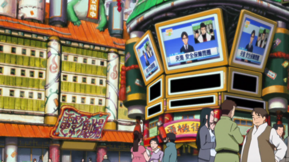

Quand un feu sacré brûle au fond de l'âme, sa lueur finit par illuminer tout le village. - Hiruzen Sarutobi
Konoha (木ノ葉隠れの里, Konohagakure no Sato) est le village caché de la Feuille.
Tout comme les villages cachés des cinq autres grands pays, le village de Konoha est dirigé par un kage, en l'occurrence le Hokage. Le bandeau frontal des ninjas de Konoha est frappé d'une feuille stylisée. Cette feuille symbolise les méthodes d'apprentissage qui étaient dispensées aux aspirants ninjas des précédentes générations : une feuille était posée sur leurs fronts et ils devaient la faire tourner afin d'accroître leur concentration et de développer leur maîtrise de soi.
Le village de Konoha se situe au centre d'une profonde forêt et est entouré de puissants murs en bois. Les visages de tous les Hokage sont sculptés sur une falaise qui domine tout le village, ce qui n'est pas sans rappeler le Mont Rushmore aux États-Unis.
Le village est formé par une alliance des clans Senju de la Forêt et du clan Uchiwa, les clans les plus puissants du monde. Hashirama Senju, le chef du clan Senju, devient le 1er hokage et son frère le second ; ils forment celui qui devient plus tard le 3e hokage. De fait, Konoha est le premier des villages cachés et permettant la stabilisation et la fusion des nombreux petits territoires de l'époque..

Un lieu chargé d'émotion qui sera la clé de vos désirs de voyages ! En effet, Konoha regorge de lieux insolites à partager en famille ou en solitaire, un village situé à la croisée entre monde futuriste et époque féodale, une conjugaison susceptible d'éveiller votre attention ! Le Village Caché par les Feuilles d'Arbres est l'un des cinq grands villages ninjas et il est l'un des plus puissants.
Se trouvant dans le Pays du Feu et bien qu'il soit très puissant, il fut paisible pendant les seize dernières années et s'habitua à cette paix, il reste l'un des villages les plus puissants déjà existants et a un grand pouvoir militaire. Aujourd'hui, c'est une place économique et attractive, où vous pourriez y couler des jours paisibles
HISTOIRE
Des lieux, des personnes, une histoire passionante. Cliquez sur les images de droite à gauche en partant du haut pour lire... (sur téléphones & tablettes, même principe en partant de la première table puis la deuxième en dessous)
![Après la fin de la Troisième Guerre Ninja, Minato Namikaze fut choisi comme quatrième Hokage. Peu de temps après son élection, Tobi retourna au village et, après avoir extrait Kyûbi de Kushina Uzumaki, l'utilisa pour attaquer Konoha. Minato fut capable de vaincre Tobi, mais il fut contraint de sacrifier sa vie pour renfermer Kyûbi dans son fils, Naruto Uzumaki. Beaucoup de ninjas moururent en défendant le village, et la plupart des survivants blâmèrent Naruto pour les actions du renard. De plus, l'attaque de Kyûbi fut perçue par le village comme l'œuvre des Uchiwa, alors les seuls assez puissants (ayant le Sharingan) pour le contrôler.](../images/petite1.jpg "4/ Attaque de Kyûbi à Konoha")
![Konoha prit part aux trois premières guerres ninjas. Hashirama mourut pendant la Première Grande Guerre Shinobi, alors son frère devint le Deuxième Hokage. Le deuxième mourut également pendant la guerre, tué par des ninjas de Kumo, mais il nomma Hiruzen Sarutobi comme son successeur avant sa mort. Hiruzen, le troisième Hokage, conduisit plus tard les forces de Konoha lors de la Deuxième Grande Guerre Shinobi. Les batailles prirent majoritairement place dans la région d'Ame, causant de nombreuses échauffourées avec Hanzô, le chef du village d'Ame. Des décennies plus tard, Konoha fut impliqué dans la Troisième Grande Guerre Shinobi. Konoha combattit Iwa, en utilisant Kusa pour champ de batailles. Konoha fut presque vaincu, mais Minato Namikaze contribua à tourner la guerre en leur faveur. Les clans Uchiwa et Hyûga furent aussi les clans les plus actifs durant la guerre.](../images/petite2.jpg "3/ Grandes Guerres Shinobi")
![Craignant que les Senju, ayant un contrôle complet sur Konoha, en profitent pour renverser les Uchiwa, Madara essaya de créer une rébellion des Uchiwa contre les Senju. Mais les Uchiwa refusèrent de continuer à verser leur sang, laissant à Madara l'obligation de combattre seul. Il fut finalement vaincu à la Vallée de la Fin où on le crut mort durant le combat. Puis Konoha eut la puissance de Kyûbi, et, pour contenir sa puissance, le village choisit comme hôte de Kyûbi les membres du Clan Uzumaki, avec qui les Senju et donc le reste de Konoha avaient des liens étroits. Hashirama donna d'autres Bijûs en sa possession à d'autres villages nouvellement formés pour promouvoir la paix. Ce fut de courte durée.](../images/petite3.jpg "2/ Révolte de Madara")
![À l'époque précédant la création des villages ninjas, les ninjas étaient organisés en petits clans de mercenaires qui ne savaient rien faire, à part combattre. Parmi les clans ninjas innombrables, le Clan Uchiwa et le Clan Senju étaient les plus forts. Après beaucoup de sang versé, le clan Senju voulut faire une trêve avec les Uchiwa. Madara Uchiwa, alors chef du clan Uchiwa, accepta à condition que Hashirama se suicide ou tue Tobirama, son frère. Hashirama, ne voulant pas tuer son petit frère, choisit de se suicider, mais au dernier moment, Madara l'empêcha et accepta la trêve. Les Senju, les Uchiwa, et les clans conquis par les Uchiwa, en se réunissant, firent naître Konoha à l'endroit où se tenait une forêt jadis. Hashirama Senju, alors le chef des Senju, utilisa ses Jutsu Mokuton afin de construire beaucoup de bâtiments.](../images/petite4.jpg "1/ Naissance de Konoha")
![Après l'attaque de Pain sur Konoha, les cinq Kages organisèrent une Réunion des 5 Kages pour parler de l'Akatsuki. Lors de la réunion, Tobi s'infiltra au sein du Sommet pour expliquer son plan afin de dominer le monde puis demanda qu'on lui livre Kyûbi et Hachibi. Les 5 grands villages ninjas avec le Pays du Fer unirent leurs forces pour lutter contre Tobi, créant ainsi l'Alliance Shinobi et déclenchant la Quatrième Grande Guerre Shinobi. Danzô fut tué peu de temps après la déclaration de guerre, mais Tsunade se réveilla de son coma à temps pour reprendre son poste de Hokage et établir le plan d'action du village pendant la guerre.](../images/petite6.jpg "7/ Quatrième Grande Guerre Shinobi")
![Trois ans après l'invasion avortée de Suna et Oto, les six corps de Pain et Konan de l'Akatsuki attaquèrent le village, dans le but de retrouver et de capturer l'hôte de Kyûbi, Naruto Uzumaki. Les forces de Konoha luttèrent jusqu'au bout, mais ne purent empêcher la destruction du village par le Shinra Tensei. Naruto fit alors son retour et réussit à vaincre Pain, vengeant ainsi le village et ceux morts pour le défendre. Suite à un entretien entre Naruto et Nagato, celui-ci se sacrifia pour ressusciter tous les ninjas morts durant la bataille.](../images/petite7.jpg "6/ Invasion de Pain")
![Quand le clan Uchiwa (le plus puissant de tous les clans existants) planifia de détruire Konoha, un de ses membres, Itachi Uchiwa, commença à dénoncer les actions des Uchiwa à la direction de Konoha. Itachi reçut ensuite l'ordre d'éliminer le clan pour empêcher un conflit sanglant et ensuite de vivre comme un criminel. Il fit ce qui lui avait été demandé avec l'aide de Tobi (qui se faisait passer pour Madara), mais il ne put tuer son petit frère, Sasuke Uchiwa. Il convainquit le Troisième Hokage d'épargner Sasuke et de le protéger. Il se joignit alors à l'Akatsuki. Il resta dans l'Akatsuki toute sa vie jusqu'à ce qu'il meure à l'issue de son affrontement contre Sasuke. Après la mort du Troisième Hokage, Itachi réapparut au village de Konoha, pour rappeler qu'il était encore en vie et qu'il pourrait encore divulguer le secret de la mission.](../images/petite8.jpg "5/ Massacre du clan Uchiwa")